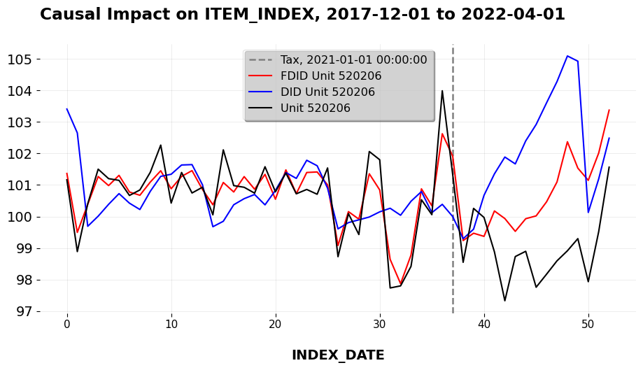

Why Data Generating Processes Matter for Causal Infernece
Econometric Theory
Econometrics
Causal Inference
Author
Jared Greathouse
Published
February 14, 2025
All Causal Estimates Are Not Created Equally
I began my dissertation last week. The first chapter studies the causal impact of Texas’ repeal of the tampon tax on consumer demand as well as consumer price savings. Naturally, I’ll be using synthetic control methods as one may have guessed to answer this question. I was in the middle of doing the literature review, my favorite part of the research process. Upon doing some digging, I had to write a post about this. I found a paper which is titled “Why current menstrual policies do not work”. Much of the framing of the paper is actually fine, until we get to the part about evidence regarding the tampon tax. King writes
Similarly, a recent UK campaign to abolish a 5% ‘tampon tax’ unintentionally boosted the profits of disposable product manufacturers by about £15 million per year, without substantially reducing the cost of products for consumers,
citing this paper at this link. I read this and thought “Hmm, I wonder what their identification strategy is.” So I went to look up the paper King cites. The paper, written by Tax Policy Associates, studies the pass through effects of abolishing the tampon tax (in the U.K.) on savings to consumers. For quick refernece, I grab the data from their Github and plot the treated unit (a normalized estimate of tampon sales) versus the trajectory of the controls. Instantly, we can see that this is an extremely high dimensional dataset. There are 646 control units and only 37 pre-treatment periods.
import requestsimport pandas as pdfrom io import StringIOfrom mlsynth.mlsynth import PDA, FDID, dataprepimport osimport matplotlibimport numpy as npimport matplotlib.pyplot as pltdef plot_treated_vs_controls(donor_matrix, treated_vector, pre_periods, title):""" Plots a single treated unit against the control group. Parameters: - donor_matrix (numpy.ndarray): A 2D array where each column represents a control unit. - treated_vector (numpy.ndarray): A 1D array representing the treated unit. - pre_periods (int): The cutoff time index for the pre-treatment period. - title (str): The title of the plot. """ plt.figure(figsize=(10, 5))# Indicate pre-treatment period cutoff plt.axvline(x=pre_periods, color='blue', linestyle='--', linewidth=1.5, label='Treatment Date')# Plot control group trajectories plt.plot(donor_matrix, color='gray', linewidth=0.2, alpha=0.35, label='_nolegend_')# Plot the average of control units average_controls = donor_matrix.mean(axis=1) plt.plot(average_controls, color='red', linewidth=1, label='Mean of Controls')# Plot the treated unit plt.plot(treated_vector, color='black', linewidth=2, label='Tampons')# Labels and legend plt.title(title) plt.xlabel('Time Periods') plt.ylabel('Outcome') plt.legend() plt.show()jared_theme = {"axes.grid": False,"grid.linestyle": "-","grid.color": "black","legend.framealpha": 1,"legend.facecolor": "white","legend.shadow": True,"legend.fontsize": 14,"legend.title_fontsize": 16,"xtick.labelsize": 11,"ytick.labelsize": 14,"axes.labelsize": 14,"axes.titlesize": 20,"figure.dpi": 120,"axes.facecolor": "white","figure.figsize": (10, 5.5),}matplotlib.rcParams.update(jared_theme)def fetch_and_combine_github_csvs(owner, repo, directory):""" Fetches all CSV files in the given GitHub directory that start with 'upload', combines them into a single DataFrame, and processes it. Parameters: owner (str): GitHub username or organization name. repo (str): Repository name. directory (str): Directory path within the repository. Returns: pd.DataFrame: Combined and processed DataFrame. """# GitHub API URL to list contents of the directory api_url =f'https://api.github.com/repos/{owner}/{repo}/contents/{directory}'# Get the directory contents response = requests.get(api_url) files = response.json()# Filter for CSV files that start with 'upload' csv_files = [fileforfilein files iffile['name'].startswith('upload') andfile['name'].endswith('.csv')]# Base URL for raw file content raw_base_url =f'https://raw.githubusercontent.com/{owner}/{repo}/main/{directory}/'# List to hold DataFrames df_list = []# Download and read each CSV fileforfilein csv_files: csv_url = raw_base_url +file['name'] csv_response = requests.get(csv_url) df = pd.read_csv(StringIO(csv_response.text)) df_list.append(df)# Concatenate all DataFrames combined_df = pd.concat(df_list, ignore_index=True) combined_df['INDEX_DATE'] = pd.to_datetime(combined_df['INDEX_DATE'], format='%Y%m')# Sort by panel and time combined_df = combined_df.sort_values(by=['ITEM_ID', 'INDEX_DATE'])# Create 'Tax' column and set to 1 if ITEM_ID == 520206 and INDEX_DATE >= Jan 2021 combined_df['Tax'] =0 combined_df.loc[(combined_df['ITEM_ID'] ==520206) & (combined_df['INDEX_DATE'] >='2021-01-01'), 'Tax'] =1 selected_columns = [0, 1, 2, 5, -1] # Column indices to keep combined_df = combined_df.iloc[:, selected_columns] combined_df = combined_df.reset_index(drop=True)# Filter only ITEM_IDs that have exactly 53 observations, to balance our panel counts = combined_df['ITEM_ID'].value_counts() balanced_item_ids = counts[counts ==53].index combined_df = combined_df[combined_df['ITEM_ID'].isin(balanced_item_ids)] combined_df['ITEM_ID'] ='Unit '+ combined_df['ITEM_ID'].astype(str) combined_df = combined_df.reset_index(drop=True)return combined_dfowner ='DanNeidle'repo ='tampontax'directory ='ONS_data'df = fetch_and_combine_github_csvs(owner, repo, directory)prepped = dataprep(df, 'ITEM_ID', "INDEX_DATE", "ITEM_INDEX", 'Tax')plot_treated_vs_controls(prepped["donor_matrix"], prepped["y"], prepped["pre_periods"], "Tampons vs. Controls")
To have a better sense of what is what, I’ll quote the paper directly, where the authors say
We used Office for National Statistics data to analyse tampon price changes around 1 January 2021, the date that the “tampon tax” was abolished. We were able to do this because the ONS includes tampons (but not other menstrual products) in the price quotes it samples every month to compile the consumer prices index. Since 2017, the ONS has published the full datasets for its price sampling.
Okay fine. No problems so far. The authors find “Overall, the average price for [tampons in] the period after the VAT abolition is about 1.5% less than it was beforehand.” Still no issues so far. But then we check the methodology that they link to… and the results were less than exciting, putting it quite politely. Why? The authors do a simple t-test. That is, a simple pre-post test which compares the mean difference of tampon prices before the abolition of the tax and after the abolition of the tax. Precisely, they write
Apply [sic] statistical techniques to these datasets is not straightforward given the limited number of datapoints and very high degree of volatility. It was, however, thought appropriate to run an unequal variance one-sided t-test (using the python SciPy library) to compare the pricing datasets for the six months before 1 January 2021 with those for the subsequent six months.
I read this and I was kind of horrified. Thought appropriate? By who? Who said this was a good idea? Who would look at this and say it is okay, especially for a written publication that people are going to cite? Look, I get it. I know that real data are often messy and that as data scientists we have to take steps to compensate for noise, corruption, and overall lack of cleanliness… but I must be clear about something: no matter what the extant difficulties are, this is not at all the correct way to do things. In fact, I’m going to prove it in this post, beyond saying “it’s just a t-test, so therefore it’s bad”. To really understand what is wrong here, we have to discuss the role of data generating processes and why they matter. All the time, we see statisticians write about low-rank models or linear factor models, and I’m not sure policy analysts or data scientists actually consider what they mean for applications.
Data Generating Processes
Below, I connect the Difference-in-Differences design (DID) to its two-way fixed effects model as well as its estimation process. I then do the same for the t-test, and emphasze what we might conclude about the identifying assumptions for both methods.
DID
For DID, we presume the outcome \(y_{jt}\) is (at minimum) generated by:
where \(\lambda_j\) is the unit-specific fixed effect, \(\delta_t\) is the time-specific fixed effect, and \(\epsilon_{jt}\) is the idiosyncratic mean zero error term. All this means is that each outcome we see in the spreadsheet is generated by some common time effect and unit specific effects. We begin by taking expectations, as this removes the error term. When we do this, we are left with
Now, consider two periods, \(t\) and \(t^{\prime}\). The expected untreated outcome at time \(t\) is \(\lambda_j + \delta_t\), and at time \(t^{\prime}\) it is \(\lambda_j + \delta_{t^{\prime}}\). The difference between these expected outcomes is:
Notice that the unit fixed effect \(\lambda_j\) goes away. The difference in expected untreated outcomes depends only on the time effects \(\delta_t\) and \(\delta_{t^{\prime}}\). This result applies both to the treated unit and to the control group. For the treated unit, denoted as \(j = 1\), the expected difference is:
holds across all periods, including the post-intervention period. In other words, the difference between the treated and control units would remain constant over time, even absent the treatment. The groups do not need to have the same levels of outcomes; they only need to share the same average trends over time. This of course is the parallel trends assumption, which we can already see in plenty of work which extends this idea to the staggered adoption setting.
T Test
We can follow the exact same logic for the t-test under an even simpler setup. In the pre-treatment period, the expected outcome for unit \(j\) is:
Now, we compute the difference in expected outcomes between the pre-treatment and post-treatment periods for the treated unit
\[
{\color{blue} \mathbb{E}[y_{jt} \mid d_{jt} = 1]} -
{\color{red} \mathbb{E}[y_{jt} \mid d_{jt} = 0]}
\] This is just the t-test estimator expressed in terms of expectations. Substituting the expressions above into this, we get:
Note that this would holds even for an interactive fixed effects model.
For the pre-post t-test to be valid, we essentially must assume that the error terms \(\epsilon_{jt}\)are independent and identically distributed (i.i.d.) between the pre-treatment and post-treatment periods. This means that any difference in outcomes should be due solely to the treatment effect, not due to other unobserved factors.
The assumption is that the expected difference in error terms is zero:
This result implies that any observed difference in outcomes between the pre- and post-treatment periods must be entirely due to the treatment effect and noise, assuming no confounding factors or time-specific shocks.
Why did I bother to derive all of this? Why should policy analysts care? Well, we care about having unbiased and consistent estimates of our treatment effect estimand. Estimators are grounded in some form of data generating process which has implications for their ability to do the task we care about. Parallel trends made by DID, while strong, is a much more defensible assumption than the one you’d need to make for a truly valid pre-post treatment t-test. DID says (even for multiple treated units under staggered adoption) that so long as our control group is parallel with respect to the treatment group, our ATT is identified. The assumptions of the t-test takes even time based confounding away- which basically is never true in real life.
In fairness, the Tax Policy Associates authors do recognize these shortcomings, writing
The prices of tampons and the other consumer goods considered in this paper will be affected by numerous factors… this makes it difficult to separate real trends from noise. More sophisticated statistical methods than a t-test are therefore not helpful (difference-in-difference and synthetic control methods were attempted, but did not produce meaningful results).
They do not share their code for either the latter, but I will share mine. I agree with them that there are plenty of confounding factors (mostly unobserved) and noise that we have to attempt to account for. In such situations, we should turn to modern econometrics instead fitting the data to a method.
I won’t go over the details of \(\ell_2\) relaxation here, as I’ve done that elsewhere, and I’ll have to do a post on FDID at some point. The returned ATT for \(\ell_2\) relaxation we get with a \(\tau\) equal to 0.25 is -2.027 with a 95% CI of [-3.01,-1.05]. For context, the authors estimate an ATT of -1.5.
Next consider FDID. The ATT for FDID is -1.618, with the 95% CI being [-1.91,-1.32]. For DID, the ATT is -2.863, and the 95% CI being [-3.685,-2.041]. We can clearly see here that one, parallel trends holds for Forward DID and not for DID. The \(R^2=0.83\) for FDID, and for DID the \(R^2=-0.312\). In this case, DID is even WORSE than had we just used the empirical average of controls. We can clearly see that DID is improved by the forward-selection algorithm from FDID. FDID selects 54 controls of the 646 unit control group. The key issue here is that my analysis is more causal, and not because of magic, but because the selected PTA underlying FDID and the ineteractive fixed effects model that \(\ell_2\) relaxation works with is simply a more realsitic viewpoint of the world (of course, the technical details of these estimators matter too).
Both analyses take advantage of the full control group (646 controls) instead of the dozen or so controls the original folks sort of subjectively use (of course FDID drops most controls but I did not subjectively choose which controls to include or not). \(\ell_2\) relaxation and FDID in their own way addresses variance estimation using heteoskedasticity and autocorrelation adjusted standard errors, so we can do proper inference about the ATT.
# Fit Forward DID Modelconfig_fdid = {"df": df,"treat": treat,"time": time,"outcome": outcome,"unitid": unitid,"display_graphs": True}model_fdid = FDID(config_fdid)arco_fdid = model_fdid.fit()

The point of this post is that we can’t just shove a dataset into scipy and (metaphorically) pray for valid results. We can’t say “well, parallel trends for DID doesn’t hold, let’s go with the old school t-test and report that” (again, we can see how PTA DOES indeed appear to hold when we use the improved control group selected by the forward-selection algorithm).
In other words, counterfactual analysis is hard work. We need a little more care to be put into these questions if we mean to even try to answer them. Writing this, I was reminded of a post by Andrew Gelman who largely echos the same point. It isn’t that the question under study is silly. The question matters and is timely, but
the problem is that the data are observational, the data are sparse and highly variable; that is, the problem is hard. And it doesn’t help when researchers are under the impression that these real difficulties can be easily resolved using canned statistical identification techniques.
Said another way, the answer you get to the question is less important than how you get to the answer. Causal econometric estimators have assumptions. These assumptions give validity to our identification criteria, and are only as valid as we can publicly defend them. Oftentimes (but surely not always), the assumptions themselves are motivated by some DGP. For objective causal inference, researchers should respect this idea, even if it means we have to employ more advanced estimators. Otherwise, we may produce results that simply are either not relevant for public policy or will not inform your business if your intervention worked or not.